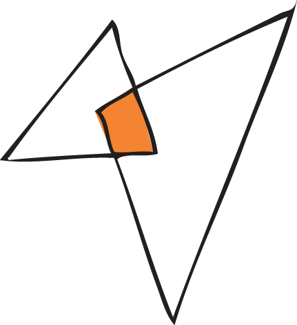

El pas de buda
Buda, avui amb unes 1.100 hectàrees de superfície, és una illa fluvial i marítima, que forma un triangle entre el riu Migjorn, la riba dreta de l’actual desembocadura de l’Ebre i la Mediterrània.

En algunes èpoques de l’any només es pot accedir a l’illa de Buda creuant el riu Migjorn amb un petit transbordador o bé creuant el riu Ebre en barca des de la riba esquerra.
Pas de Buda pel riu Ebre.
Foto: Salvador Maluquer (dècada de 1950).
Foto: Salvador Maluquer (dècada de 1950).